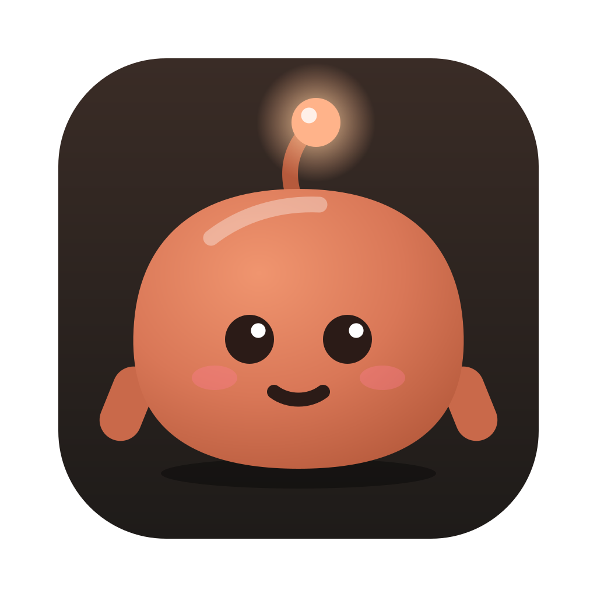
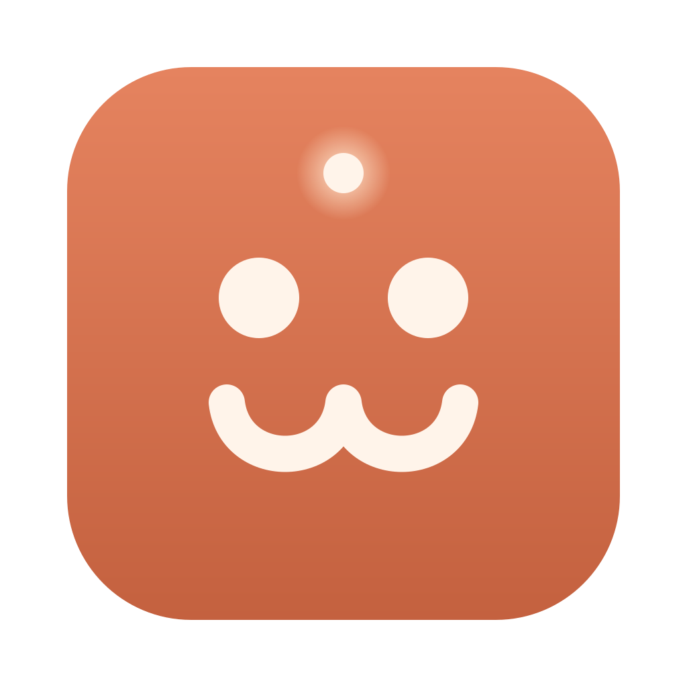

Şimdiki 3B resim, krem kare; ikon şekli yok
3B resim, krem kare; ikon şekli yok
A · Pofuduk ← önerim

Kil Mochi, koyu sıcak kare, yanan ampulC · m-yüz

Kil kare, krem yüz, ω ağız (ters m)
Kil Mochi, koyu sıcak kare, yanan ampul
Kil kare, krem yüz, ω ağız (ters m)